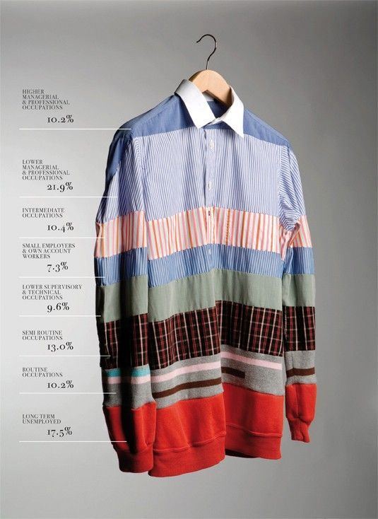
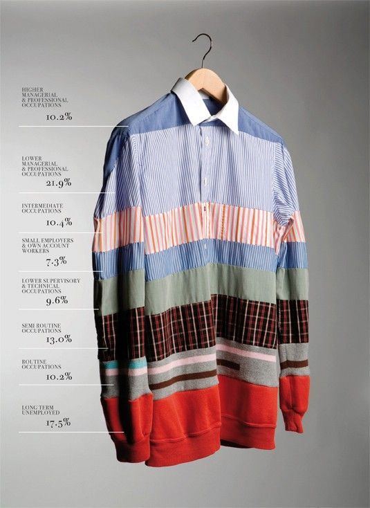

Sujet
Bienvenue sur notre site dédié à l’analyse et à la visualisation
de données autour des enjeux environnementaux. Nous souhaitons
sensibiliser aux risques planétaires, qui représentent des menaces
pesant sur l’équilibre de la Terre. Certains de ces risques ont
déjà dépassé des seuils critiques, entraînant des conséquences
importantes sur l’environnement et les sociétés humaines.
Parmi eux, le réchauffement climatique constitue un enjeu majeur,
marqué par l’augmentation des températures, la fonte des glaciers
et la multiplication des événements climatiques extrêmes. Nous
avons créé un visuel afin de représenter de manière claire
l’évolution de la température moyenne.


Réchauffement Climatique (2025)
34%
De taux d'émissions de gaz à effet de serre dans le domaine du transport.
+1.5°C
L'augmentation moyenne de la température par rapport à l'ère préindustrielle (1850).
3 000
Quantité de glaciers qui disparaissent chaque année dans le monde.
Datavisuel
Visualisez les données climatiques sous différentes formes pour mieux comprendre l'ampleur du phénomène. Les graphiques interactifs ci-dessous représentent les tendances historiques et les projections futures, facilitant une compréhension claire de la situation.
 

Poster Datavis
L'évolution de la température
Pour représenter cette évolution, nous avons utilisé une série d'alumettes. Chaque allumette photographiée correspond à une année et illustre l’augmentation progressive de la température moyenne sur Terre. Au début, les allumettes sont peu brûlées, presque intactes, et deviennent progressivement plus consumées au fil des années. Cette progression montre l’augmentation continue de la température.
Une estimation, sensibilisation
L’estimation pour l’année 2100 est représentée par une allumette noire, symbolisant un futur potentiellement critique si aucune mesure n’est prise pour limiter le réchauffement climatique. À travers cette métaphore visuelle, les allumettes évoquent à la fois la chaleur et la destruction. Nous avons donc voulu sensibiliser le spectateur à la réalité du changement climatique et à l’importance d’agir pour limiter les conséquences.

Variation de température sur Terre
Ce visual interactif vous permet d'explorer l'évolution du réchauffement climatique au fil des années. En ajustant les paramètres, vous pouvez visualiser différentes périodes et formes de représentation graphique. Ces interactions facilitent l'exploration des données climatiques, des informations précieuses et des éléments de comparaison pour une meilleure compréhension des tendances à effet de serre.
Légende
Jaune
Orange
Rouge
Hachure